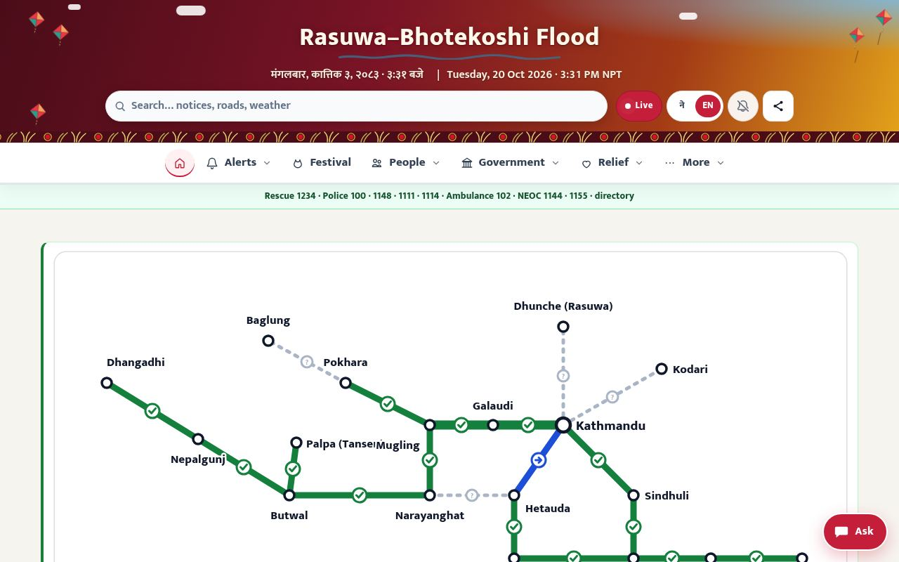

Projects
Open tools for public service. Each one is open source, and each one needs collaborators.
 Prototype
PrototypeNepalOS
Powered by GovTechNepal
A Nepali-first desktop on Debian 13 and KDE Plasma, with ONLYOFFICE, Kalimati and Nepali keyboards ready on day one.
- Release 0.1.6
Lipi
Type Nepali
A free Nepali keyboard with Romanized and Traditional layouts, for Windows, macOS and Chrome.

LiveRasuwa Flood Bulletin (opens in a new tab)
Public information during a disaster
A bilingual bulletin for the Rasuwa–Bhotekoshi flood: road status, alerts, relief and official notices in one place.
Source on GitHub- In design
Mountain fonts
Sagarmatha · Annapurna
Two open Devanagari and Latin typefaces, Sagarmatha and Annapurna, planned under the SIL Open Font License.

Have an idea for a project? Propose it.